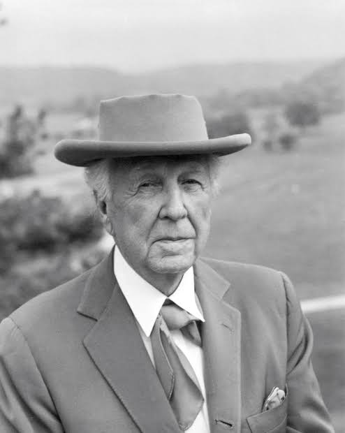

Frank Lloyd Wright was an American architect known for his innovative designs and organic architecture. He designed over 1,000 structures, with 532 completed. Wright's philosophy of "organic architecture" emphasized harmony between human habitation and the natural world.
